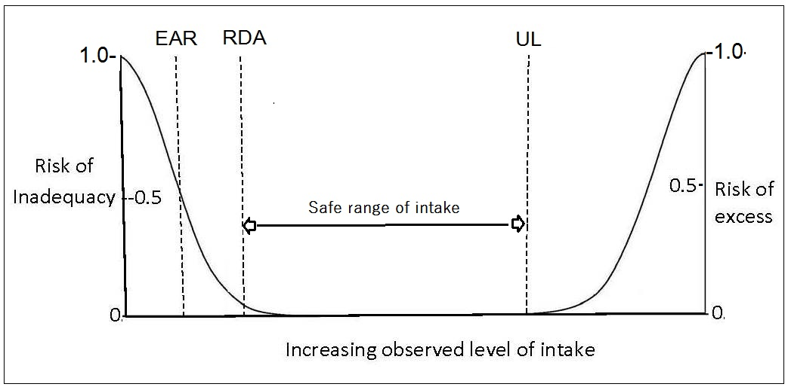

Figure 8a.1: United States and Canadian Dietary Reference
Intakes definitions showing the relationship of the observed
level of intake to the risk of inadequacy/toxicity. The Estimated
Average Requirement (EAR) is the intake at which the risk of
inadequacy is 0.5 (50%) to an individual. The Recommended
Dietary Allowance (RDA) is the intake at which the risk of
inadequacy is very small — only 0.02 to 0.03 (2% to 3%). At
intakes above the Tolerable Upper Intake Level (UL), the risk of
adverse effects increases. Modified from NASEM
(2018).